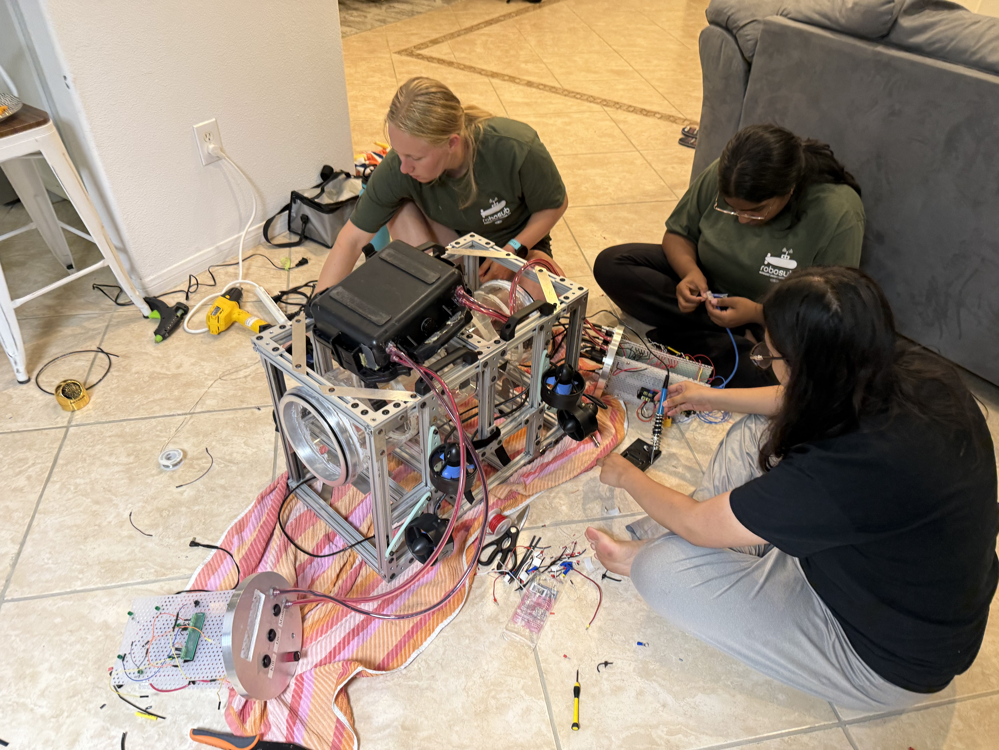

Project Overview
As the Electrical Lead for the Women in Robotics, Engineering, and Development (WIRED) AUV team, I oversaw the development of "Swim Shady," an autonomous underwater vehicle designed for the international RoboSub competition.

Integrating custom PCB systems into the internal shelving unit.
Electrical Subteam Accomplishments
My primary objective was to transition the vehicle from a "tangle of wires" to a centralized, professional system using Altium Designer.
- Custom ESC PCB: Designed and integrated a centralized board to organize eight Electronic Speed Controllers (ESCs) in a fixed row, streamlining diagnostics and reducing mechanical strain on wire terminals.
- Centralized Fuse Board: Developed a layout to protect thrusters and subsystems from overcurrent, significantly improving accessibility compared to previous scattered designs.
- Power Distribution: Managed a dual 24V battery system routed through buck converters to supply 16V to the Jetson Nano and the system fuse board.
- Safety Systems: Implemented a kill switch with an active low configuration, utilizing a solid-state relay to immediately disconnect power from thrusters upon trigger.
Programming Contributions
Beyond hardware, I contributed to the software stack, focusing on sensor integration and the transition to a modern communication framework.
- ROS 2 Architecture: Facilitated the transition to ROS 2 (Galactic), developing publishers for sensors like the Teledyne Wayfinder DVL and mission switches to create a modular, scalable codebase.
- PID Control: Co-developed the team's first PID controller, utilizing distance data from the DVL to calculate error and automate navigational maneuvers.
- Mission Control: Programmed a mission switch interface using GPIO pins to allow for code-restarts without manual computer reconnection during pool testing.
Technical Stack
Altium Designer
ROS 2 (Galactic)
Python
Jetson Nano
Teledyne DVL
I²C / PWM